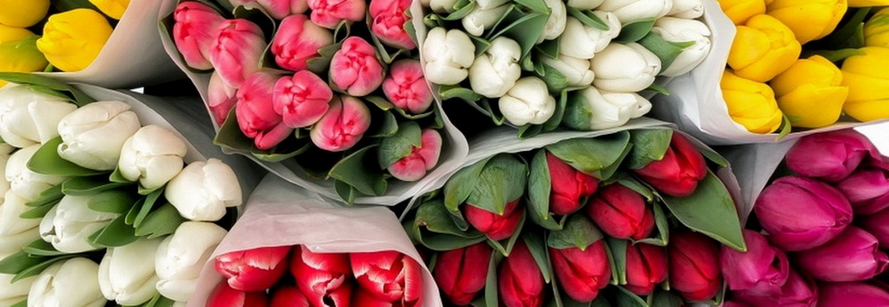

Тюльпаны в Бресте оптом

Большой ассортимент тюльпанов по доступным ценам Оформить заявку можно ниже, удобным для вас способом
1
Введите количество штук для предварительного заказа
выбрав в поле нужный цвет цветов:
белые
жёлтые
фиолетовые
розовые
красные
бело-розовые
Оформить заказ
2
При отправке формы заказа, Вы можете прикрепить файл необходимого для вас сорта и цвета (если не задано выше в поле со списком)
Введите кличество штук для заказа в первой форме и нажмите кнопку"оформить заказ"
Оформить заказ
Справки по телефонам: +375292000913, 80(1643)98-7-58